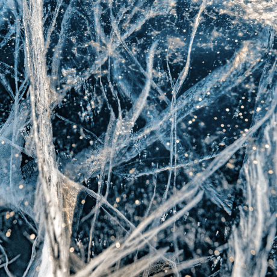

Путешествия по России
Настоящая страна не в выпусках
новостей, а здесь.

ваша полка — верхняя
Чего мы там не видели?
По опросам ВЦИОМ, 95% россиян мечтают куда-нибудь поехать, но только
36% планируют провести отпуск в родной стране. Мол, чего мы тут,
дома, не видели? На самом деле, Россия — это целая вселенная с
ласковым морем юга, густыми лесами Саян и суровыми льдами плато
Путорана. А ещё увидеть все эти красоты можно без миллионов на
счету, загранпаспорта и многочасовых перелетов. Как, например, Вера
Башмакова — смелая молодая мама, которая взяла в охапку троих детей,
усадила их в свою «Ладу» и проехала 20 тысяч километров по родной
стране. Мы выбрали и описали некоторые интересные места, достойные
вашего отпуска.
-
Часовых поясов 11
-
Объектов природного наследия ЮНЕСКО
12
-
Объектов культурного наследия ЮНЕСКО
16
-
Природных заповедников 105
-
Аэропортов 241
Куршская коса

Здесь, посреди лесов и песчаных дюн, вы сможете увидеть два
водных горизонта — спокойного Куршского залива с одной стороны и
подёрнутого рябью волн Балтийского моря с другой. Уникальная
природная зона на краю российского анклава.
На этом Калининградская область не заканчивается. Для
путешественника и исследователя там же по соседству — самая
западная точка России, Балтийская коса, — и немецкое наследие
россыпи небольших приморских городов. Атмосфера здешних мест
исключает суету, окуная в спокойствие природы и запах стального,
прохладного моря.
Кольский

Почти весь полуостров находится за Полярным кругом. Саамская
тундра, от которой на юг — тайга, а на север — Ледовитый океан,
прикидывающийся Баренцевым морем.
Возможно, вы смотрели Звягинцева и даже слышали историю
арктического фестиваля в Териберке. Возможно, слово «Хибины» не
осталось под снегом школьных воспоминаний об уроках географии.
Возможно, вы не интересовались пронизывающей земную кору
сверхглубокой скважиной, а от апатитов вас давно накрывает
апатия. Но ваша мечта увидеть северное сияние начинает сбываться
с билетом в Мурманск.
Алтай
Алтай — одно из красивейших мест в России. В первую очередь
из-за гор: если ехать вдоль хребта, вы увидите склоны, усыпанные
соснами, горные реки и озёра. А если вы откроете в автомобиле
окна, сможете познакомиться с невидимым чудом здешних мест —
горным воздухом.
Климат на Алтае умеренный, поэтому ехать сюда лучше всего летом.
Так вы увидите всё разнообразие местной флоры и фауны. По лесам
Алтая бродят лоси, над хребтами летают орлы, а на равнинах
пасутся косули. И знаменитые манулы — тоже обитатели Алтайского
края.
Зимний Байкал

Всем известен Байкал как крупнейшее озеро в мире. Многие также
знают, что это самый большой источник пресной воды и одно из
красивейших мест в России.
Конечно, это всё так. Но Байкал ещё идеальное место для
соревнований по скийорингу. Это такой вид спорта, когда лыжник
привязывает себя к мотоциклу, и тандем старается развить как
можно бóльшую скорость на льду. В марте 2019 года на фестивале
«Байкальская миля» был поставлен мировой рекорд — 197.011 км/ч.
Карелия

Сибирь заканчивается не на Урале, а в Карелии: образующая тайгу
сибирская лиственница не растёт западнее Водлозера. Зато здесь
она вымахивает на 30 метров — леса карельских национальных
парков из-за непроходимых болот никогда не знали топора.
Некоторым соснам уже больше чем полтысячелетия. Прикоснитесь к
живому существу, видевшему солнце раньше, чем увидал его Иван
Грозный. В девственном лесу на сотню километров не встретишь
тропы. А на редких тропинках деревья в паре метров от земли
помечены медвежьими когтями. Чтобы все знали, кто тут хозяин.
До Байкала «на собаках»
По мотивам учебной темы о Транссибе
— путешествие от столицы до Байкала
на электричках.